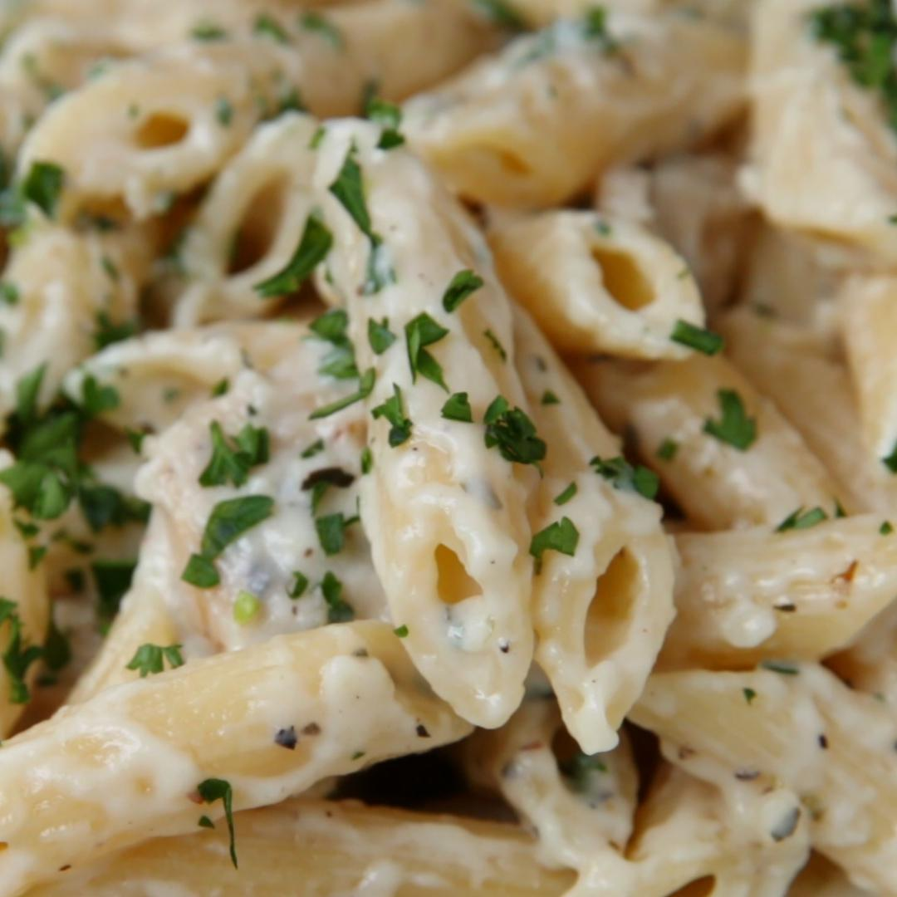

Nothing spells comfort like Italian food. Steaming bowls of pasta, buttery, roasted garlic bread, and tureens of the most flavorful sauces: it's all right there. Sometimes, you want to bring that comfort into your very own kitchen and, well, we've got just the recipe for you. This easy chicken alfredo penne will have you saying 'mangia!'' before you even know it.